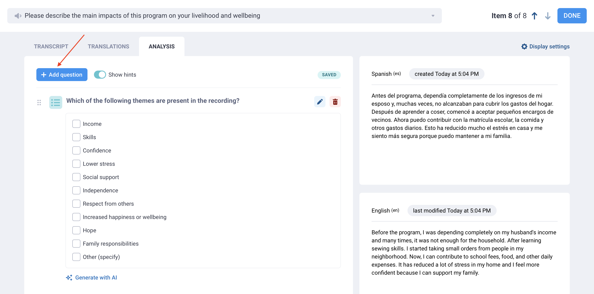
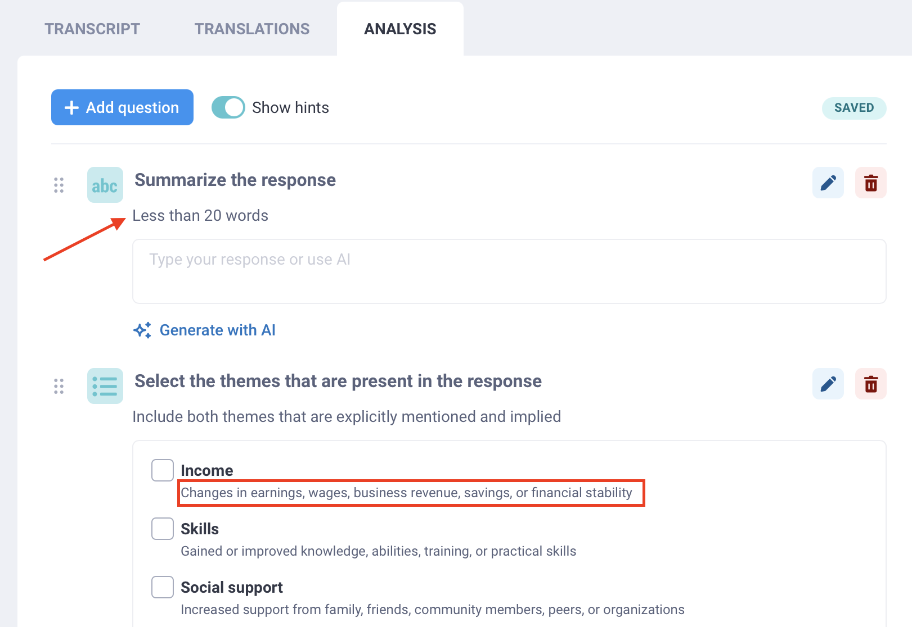

Search the knowledge base, browse our resources, and visit our Community Forum for more detailed information
Last updated: 22 Jun 2026
Qualitative analysis helps turn open-ended responses into clear, usable insights. This is especially valuable in research and emergency response, where important context can be missed in quantitative data alone.
With KoboToolbox, you can analyze responses to open-ended audio questions directly inside the user interface. Using qualitative analysis questions, you can summarize, categorize, and describe each response, then save those results as new columns in your dataset. You can either analyze data manually or using artificial intelligence (AI).
This article explains how to create analysis questions, analyze responses manually or with AI, review and verify results, customize display settings, and move between responses during analysis.
Before using the qualitative analysis features, make sure the following requirements are met:
Your form must include at least one Audio question or have background audio recording enabled.
Your project must include at least one submission with audio files.
For automated analysis, audio files must first be transcribed because the analysis is generated from the original audio transcript.
For manual analysis, transcribing your audio files before you begin is recommended but not required.
Note: Qualitative analysis is currently available only for audio responses, including background audio recordings. It is not yet supported for text or other response types.
To create qualitative analysis questions, open your project’s audio analysis interface:
Open your project and go to DATA > Table.
Click Open in the cell of the audio response you want to analyze.
Open the ANALYSIS tab.

Once you have reached the ANALYSIS tab, you can add analysis questions to generate insights from each audio response:
Click Add question.
Select the question type you want to use (e.g., Text or Single choice).
Enter a label for the analysis question (e.g., “Summarize the response” or “Select the themes that are mentioned in the response”).
This title becomes the column name in your dataset.
Add answer choices if relevant.

Each analysis question you create will appear in the ANALYSIS tab for other responses to the same audio question.
Note: You can also add hints to analysis questions or answer choices, for example to add information from a codebook or instructions for coders.
The following question types are available for analysis questions:
Question type |
Description |
|---|---|
Tags |
Add keywords or themes to describe the audio response. |
Text |
Add an open text response, such as a summary, notes, or overall impression. |
Number |
Record a number, such as the number of times a theme is mentioned. |
Single choice |
Select one option from a list, such as the main theme or perceived level of satisfaction. |
Multiple choice |
Select one or more options from a list, such as themes or barriers mentioned in the response. |
Note |
Add instructions or section labels to organize the analysis workspace. |
Each field you add becomes a new column in your dataset when you download your data, except for Note fields.
Note: Automated analysis cannot be used with Tags analysis questions. Tags can only be generated manually.
Hints can help make your analysis more consistent, whether responses are reviewed by human coders or generated with AI. When creating analysis questions, use hints to explain how each question should be answered.
You can add hints to both analysis questions and option choices.
For example, you can use hints to include:
A full codebook or coding framework
Definitions for tags, categories, or themes
Examples of how to apply each answer choice
Instructions for handling unclear or incomplete responses
Any guidance you would normally give to a human coder
Prompt-style instructions for AI-generated analysis

Hints can be especially useful when using AI, because they give the AI more context about how to interpret the audio response and how the analysis should be structured.
Hints do not have a word limit, so you can include detailed instructions when needed. We recommend keeping hints clear and specific so they are easy for both team members and AI tools to follow.
Note: If your hints are very long, such as detailed instructions for AI-generated responses, you can disable the Show hints button at the top of the ANALYSIS window to hide them.
Once you have created analysis questions, you can start analyzing responses manually or use AI to generate a response:
For manual analysis: Manually enter a response for each analysis question.
For automated analysis: Click Generate with AI under each analysis question.
After generating automated analysis responses, you can review the responses and edit them if needed.

Note: A response that has been generated with AI will include the mention AI-generated underneath the question.
For both manual and AI-generated analysis, you can review each response and mark it as verified. This can help with quality control, whether you are checking coding across a team or confirming that an AI-generated response is accurate.
To verify a response, check the Verified box below it. If you leave the box unchecked, the analysis result will still be saved, but your team will be able to see that it has not yet been reviewed.

When you finish analyzing your audio files, each analysis field is saved as a new column in your dataset. Your dataset will also include a Verified column with Yes or No values.

You can export your data with these analysis fields included for further review, synthesis, or reporting. For example, you can use them to track how often specific themes appear across your transcripts, or to create a codebook based on the most recurring Tags.
Note: When you export your data, an additional column is included to indicate the analysis source, showing whether the analysis was completed manually or generated with AI.
By default, the display panel on the right side of the ANALYSIS screen shows the audio recording, the original transcript, and responses to other questions.
You can change the display to include the information that best supports your analysis. For example, if you are working in multiple languages, you may want to show a translation or hide the original transcript.
To change the display:
Click Display settings in the top right corner.
Select the information you want to show.

You can choose to show or hide:
The audio recording
Responses to other questions in the form
The original transcript
Transcript translations
If the recording has not been transcribed, only the audio recording and submission data will be available.
Note: To learn more about transcription and translation of audio responses in KoboToolbox, see Transcription and translation of audio responses.
You can analyze only one audio response at a time, but you can move easily between responses and questions.
To switch to the next or previous submission, use the arrows to the left of the DONE button.

To switch to a different audio question within the same submission, use the drop-down menu at the top of the screen and select the question you want to analyze. You will be able to add new analysis questions for this audio question.

Community Plan users can make up to 25 AI-generated analysis requests for free. Each time you click Generate with AI, it counts as one request. The following limits apply to paid KoboToolbox plans:
Plan |
Limits |
|---|---|
Professional |
1,000 analysis requests |
Teams |
2,000 analysis requests |
Enterprise |
30,000 analysis requests |
If you need more AI-generated analysis requests, you can upgrade to a plan with a higher quota or purchase an Automatic analysis requests add-on. Add-ons are available based on your data analysis needs, starting at $15 for 2,000 additional requests. You can always continue using the manual analysis features with no usage limit.
To ensure privacy and reliability when analyzing open-ended interview transcripts, KoboToolbox securely hosts an open-source AI model (gpt-oss-120b) within our own server environment rather than sending data to a commercial AI provider. Your data is never shared with an external third-party AI company, and you retain full control over your information.
Open-source models provide greater transparency into how data is processed. Transcripts submitted for analysis are never used to train, retain, or improve the underlying AI model.
Compared to commercial AI providers, which frequently update models behind the scenes and may apply filtering that can affect the analysis of complex or sensitive topics, open-source models offer greater stability and consistency throughout the lifecycle of a project. This helps provide a more neutral and predictable baseline for qualitative research.
Our AI analysis features have been extensively tested against both human coders and more than 40 commercial and open-weight AI models to ensure high quality and reliable results.
Did you find what you were looking for? Was the information clear? Was anything missing?
Share your feedback to help us improve this article!